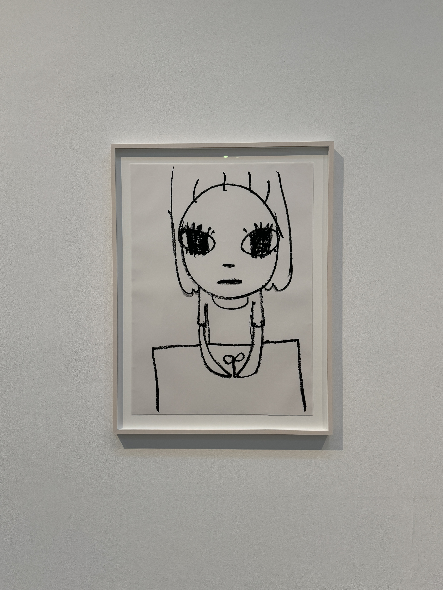
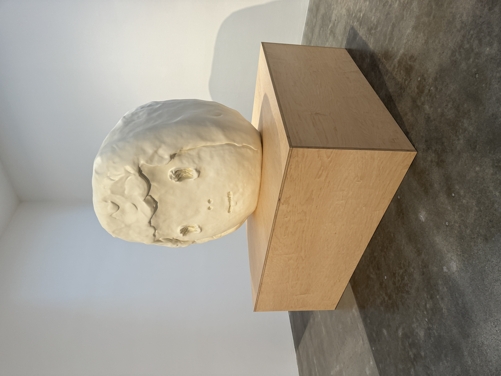
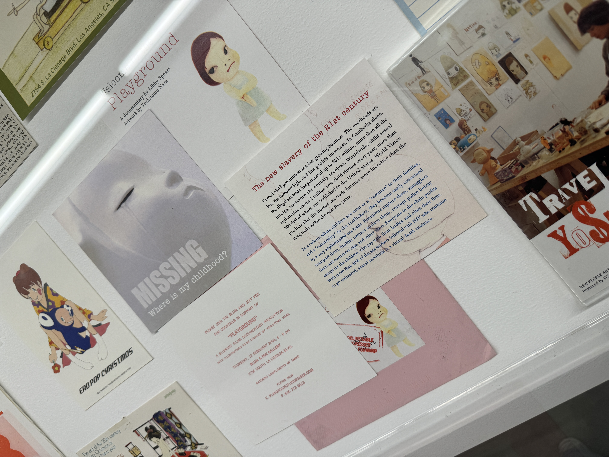
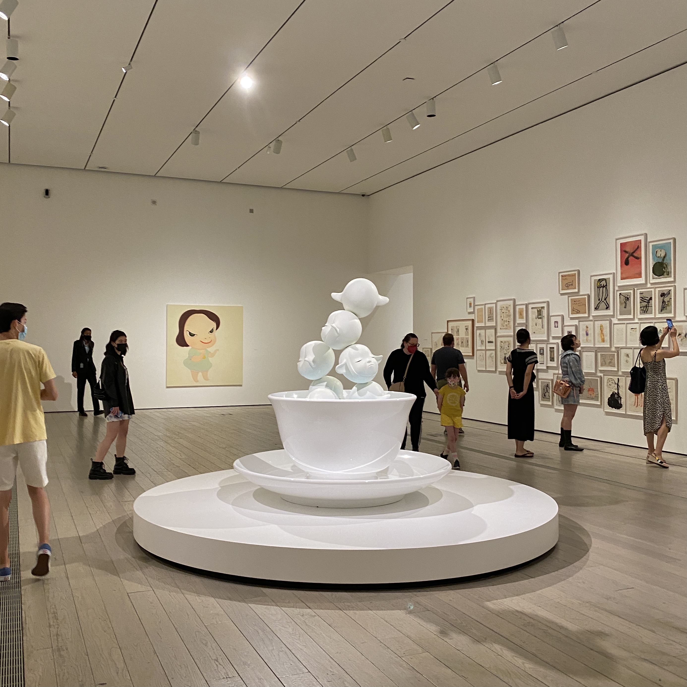
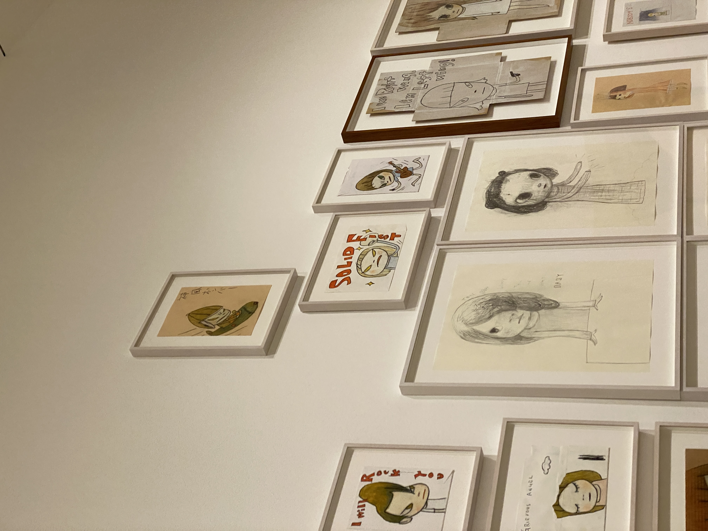
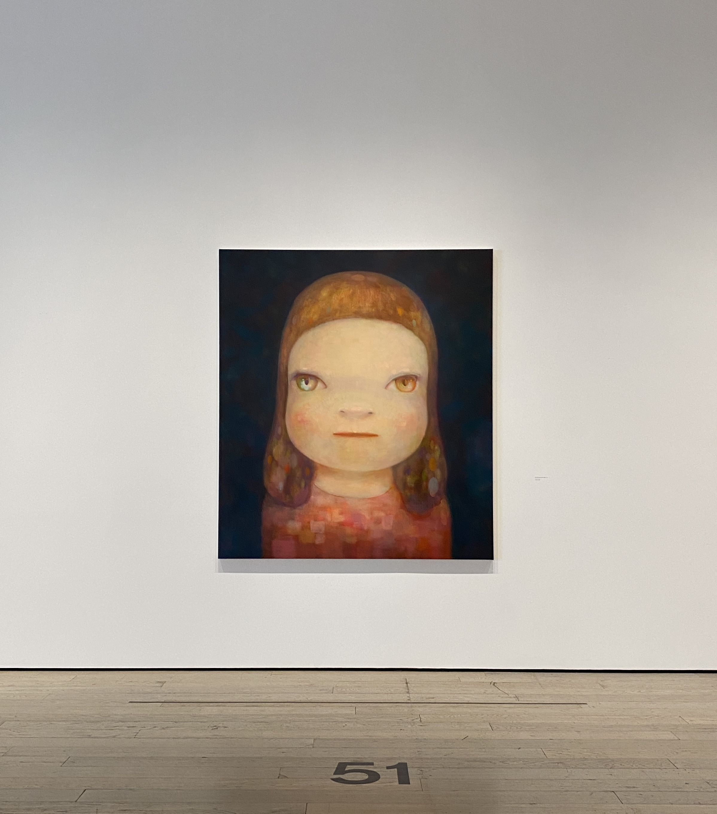
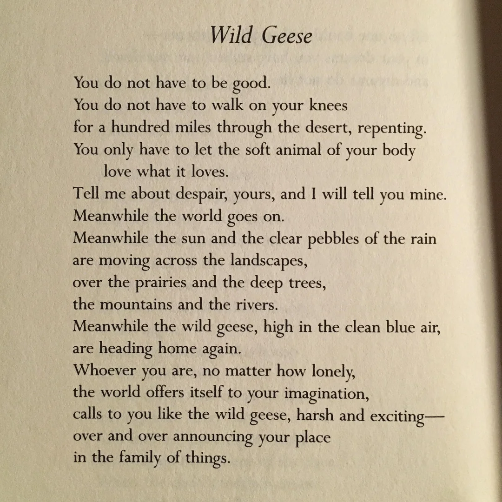
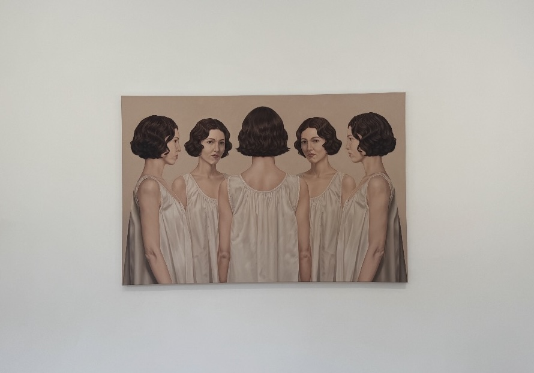
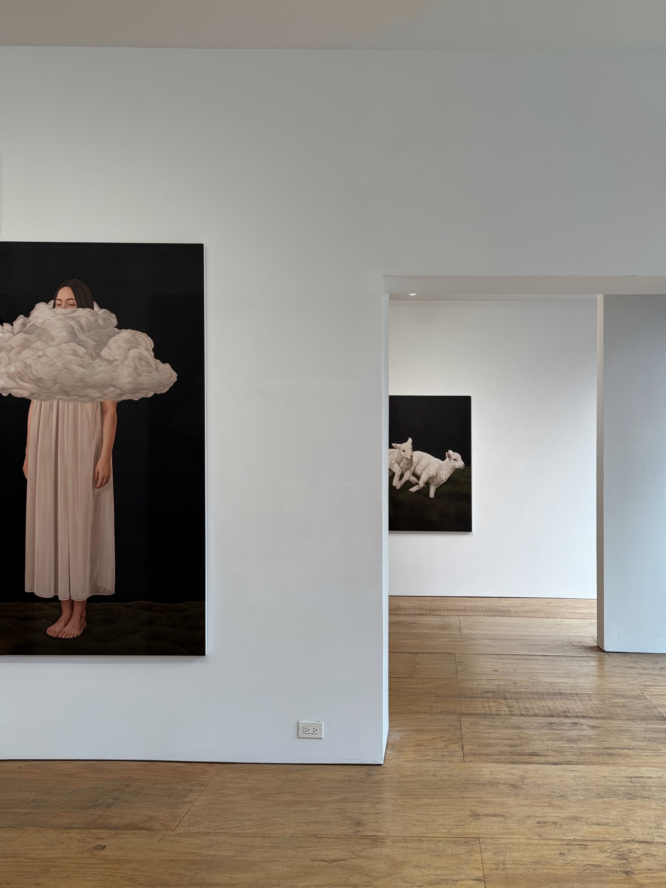
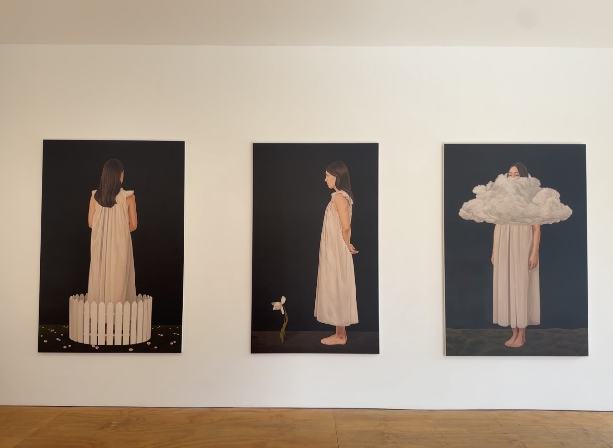

. ִ ་ ˖ ʿ ִֶָ ׄ.𖥔 ݁ ˖ causes of intrigue . ִ ་ ˖ ʿ ִֶָ ׄ.𖥔 ݁ ˖






Yoshitomo Nara — LA I've loved Yoshitomo Nara's work since early high school, when I first saw his work at LACMA. I keep coming back to his figures; their expressions that feel both vulnerable and defiant. His work holds so many feelings in such simple forms that has stayed with me over the years.

Wild Geese — Mary Oliver Mary Oliver is one of my favorite poets. This poem pairs especially well with Adrianne Lenker's song, Anything.
Yoko Ono — The Broad, LA I went to this exhibit four times throughout the summer. Maeve and I completed the entire puzzle.



Meghann Stephenson — NYC Meghann Stephenson recently exhibited her work in a small gallery next to the place I lived last year. It's sweet to discover an artist's work in a space so close to somewhere I already knew so well. Some of these photos were taken by my friend Avery.
Empire (2014) — MoMA, NYC A beautiful omage to the city. This piece was created by pseudonym artist Lutz Bacher.